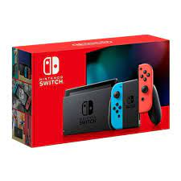
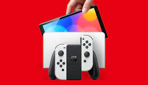

Nintendo Switch
Inicio
Definición
Caracteristicas
Contactame
Características
Características
Características Principales
Switch se adapta a las preferencias de uso de cada uno.
es una consola portátil..
se convierte en una consola de sobremesa
Dispositivos

Realidad Virtual

Controladores